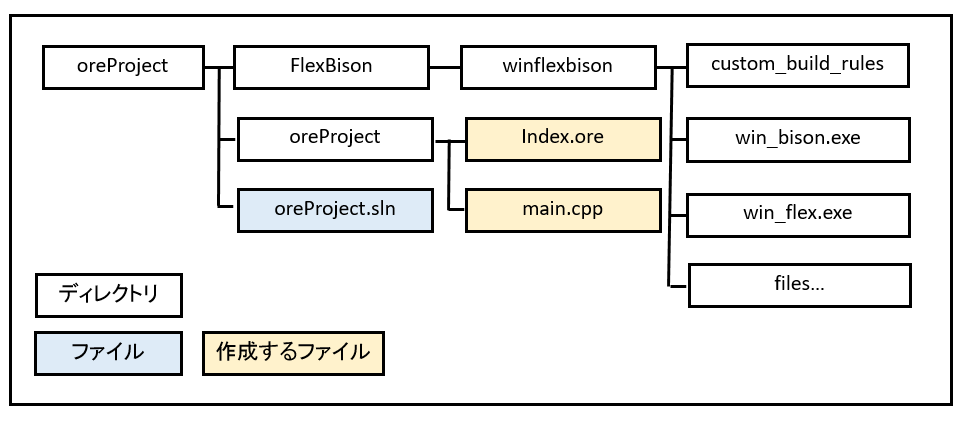
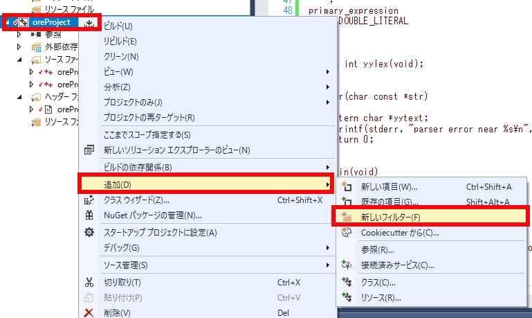
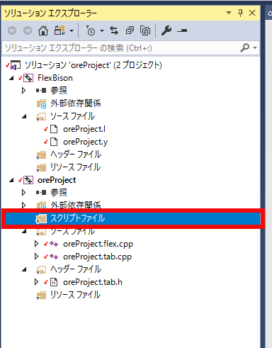
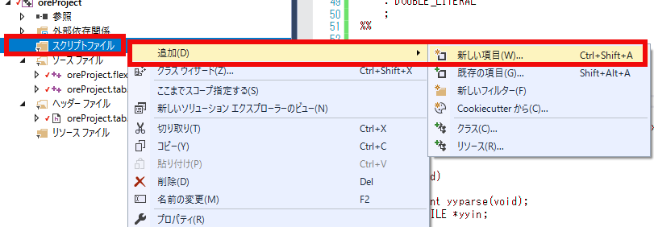
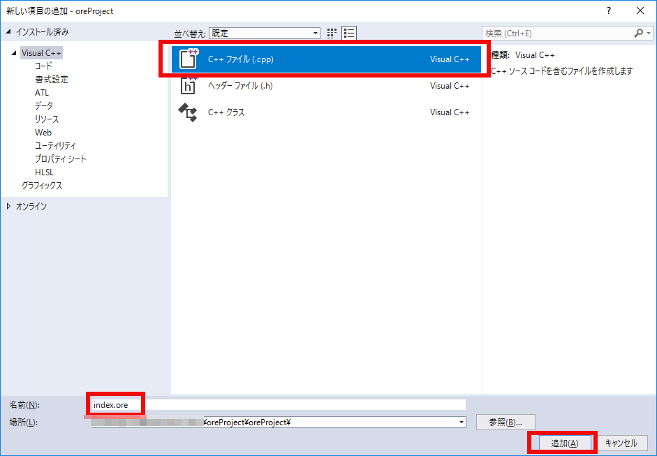
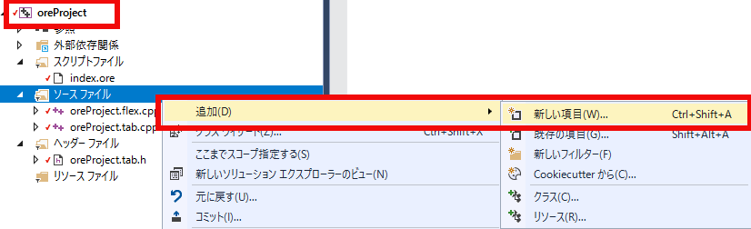
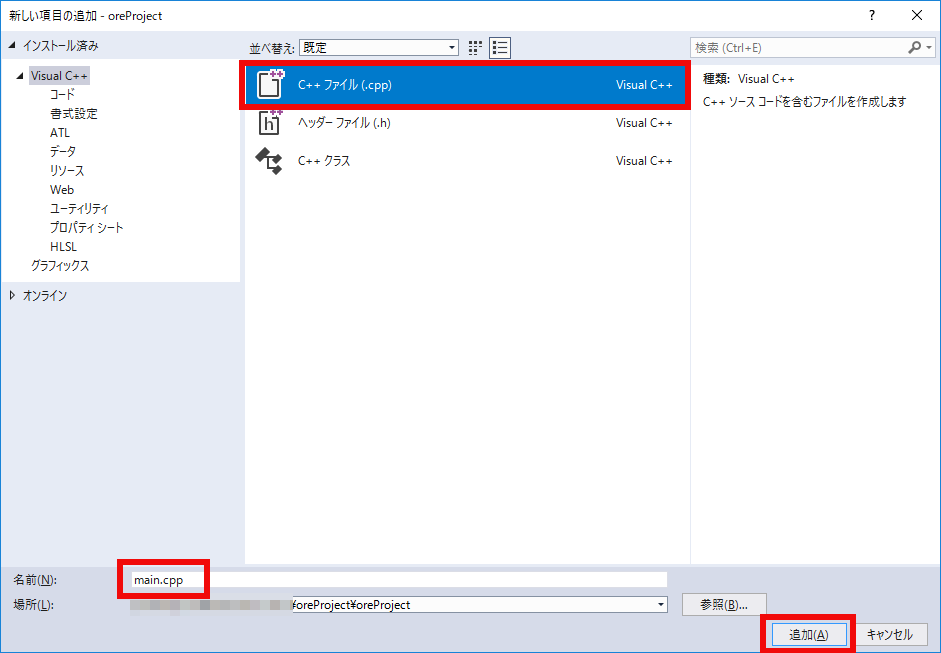
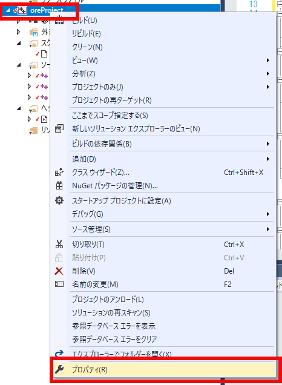
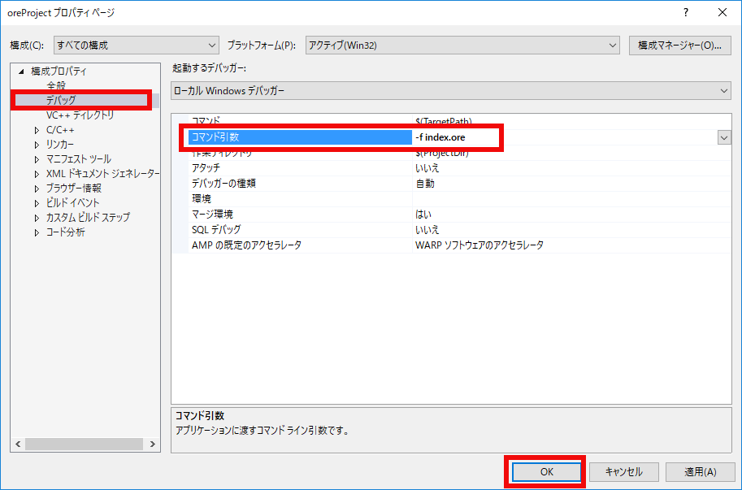
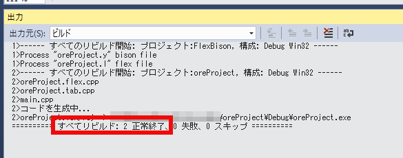

$ oreProject -f index.ore
C:\> oreProject.exe -f index.ore

図030101
まず、上図のoreProjectディレクトリ内にindex.oreを作成します。

図030102
フィルタの名前をスクリプトファイルとします。

図030103
そのフィルタを右クリックして新しい項目を追加します。

図030104
C++ファイルを選び、ファイル名をindex.oreとして、oreProjectのプロジェクトディレクトリ内に追加します。

図030105
出来たファイルに記述する内容は以下の通りです。
10 + 3 10 * 3
int main(void)
{
extern int yyparse(void);
extern FILE *yyin;
yyin = stdin;
if (yyparse()) {
fprintf(stderr, "Error ! Error ! Error !\n");
exit(1);
}
}
/*
int main(void)
{
extern int yyparse(void);
extern FILE *yyin;
yyin = stdin;
if (yyparse()) {
fprintf(stderr, "Error ! Error ! Error !\n");
exit(1);
}
}
*/

図030106
ファイル名をmain.cppとします。

図030107
そしてそこに以下を記述します。
#include <stdio.h>
#include <stdlib.h>
#include <iostream>
#include <fstream>
#include <vector>
#include <string>
using namespace std;
class InputParser {
vector <string> tokens;
public:
InputParser(int &argc, char **argv) {
for (int i = 1; i < argc; ++i) {
tokens.push_back(string(argv[i]));
}
}
const string& getCmdOption(const string &option) const {
vector<string>::const_iterator itr;
itr = find(tokens.begin(), tokens.end(), option);
if (itr != tokens.end() && ++itr != tokens.end()) {
return *itr;
}
static const string empty_string("");
return empty_string;
}
bool cmdOptionExists(const string &option) const {
return find(tokens.begin(), tokens.end(), option)
!= tokens.end();
}
};
int main(int argc, char **argv) {
InputParser input(argc, argv);
const string &filename = input.getCmdOption("-f");
if (filename.empty()) {
cerr << "ファイルを指定してください" << endl;
return 1;
}
extern int yyparse(void);
extern FILE *yyin;
if ((yyin = fopen(filename.c_str(), "r")) == NULL) {
cerr << "ファイル読み込みに失敗しました" << std::endl;
return 1;
}
if (yyparse()) {
cout << "プログラム終了" << endl;
}
return 0;
}

図030108
構成プロパティ－デバッグのコマンド引数に
-f index.ore

図030109
記述したら、ビルド－ソリューションのリビルドします。以下の様な出力があれば成功です。

図030110
デバッグ－デバッグなしで実行してみましょう。コンソールに以下の出力が得られるはずです。（VS2017の場合）
>>13.000000 >>30.000000 parser error near プログラム終了 ...\oreProject\Debug\oreProject.exe (プロセス 10176) は、コード 0 を伴って終了しました。 このウィンドウを閉じるには、任意のキーを押してください . . .
10 - 3 10 / 3
>>7.000000 >>3.333333 parser error near プログラム終了 ...\oreProject\Debug\oreProject.exe (プロセス 8508) は、コード 0 を伴って終了しました。 このウィンドウを閉じるには、任意のキーを押してください . . .